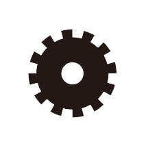

calling all systems-thinkers
We want to round up systems-thinkers committed to social change. Good signs you're interested in systems-thinking include:
- being idealistic, to the point where it's frustrating
- a determination to get to root causes
- feeling disappointed by your profession or working in the status quo
- a desire to understand complexity
- an appreciation for reflection as much as action
If this sounds like you, let's talk. Working together may mean taking on projects, critiquing others' work or just talking about systems all day long.
join as a partner
As a nonprofit, a business enterprise, or a community organization - you are the experts. Your invaluable knowledge, relationships, and resources will help us both push forward our missions of creating meaningful social change. Critique our projects or co-design a new strategy with us.
be an independent collaborator
You don't have to join our collective, but RESUS could help you broadcast your message. We want to support systems-related projects that are already underway. Let's see how we can help but still maintain your independence.
non systems-thinkers
Don't worry, not everyone is into systems-thinking. But let's still talk - we may have ideas on where you can start, even if it's not with us.
Changemaker types:
It takes all kinds to make the world go 'round. Everyone - from working in cubicles to working in factories - plays an important role, even if it's a stepping stone to something else. We want to learn from all walks of life.
Given our interest in creating fundamental change, we loved the types of changemakers identified by the Story of Change.
Here is our version:

BUILDER:
You are a maker. You need to create. Web developers, database developers, furniture designers, graphic designers, craftsman and tinkerers can help us with building prototypes, apps, meaningful databases, branding campaigns, and accessible and valuable tools.

THINKER:
You question everything. You love to sort things out and figure out people. Passionate individuals, office workers, strategists, project managers, artists, students, parents - anyone! You can all help us bring fresh ideas to the table because more perspectives mean a more comprehensive solution.
investigator:
You want to understand existing conditions. You might be a data scientist, academic, student, or policy analyst. You can help identify what's broken or perverse about systems to narrow down our solutions. You identify what information should be collected and suggest how to present it in an accessible, meaningful way.

communicator:
You can send a message in a unique way, grab attention, and figure out what really resonates with people. You might be a current or aspiring writer, journalist, blogger, theater major, public speaker, musician, or other fearless type.
networker:
You know everyone. You connect people to each other everday and you love doing it. People collaborate because of you. You are a matchmaker for change. Bringing two like minds together brings you pure joy.
resister:
Acting quickly and directly with people is when you feel like you're getting the most done. You might be an activist or community organizer at heart. Don't think about it too much ... "just do it" is your motto. Who cares about anyone standing in your way.